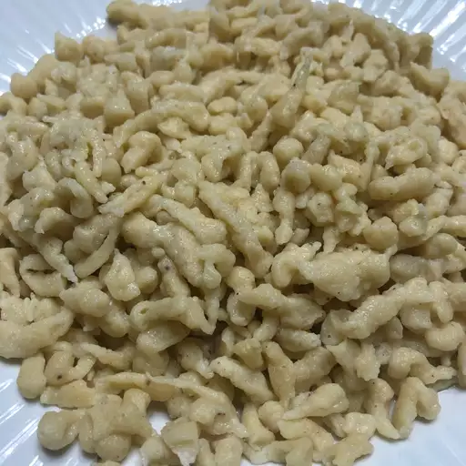

Spätzle (aka Spaetzle)

Ingredients
- ½ cup all-purpose flour, plus more as needed
- 1 large egg
- ½ teaspoon kosher salt
- 1 pinch cayenne pepper
- 1 tablespoon creme fraiche, sour cream, or plain yogurt
- 3 tablespoons milk, or as needed
Directions
-
Place flour, egg, salt, cayenne, cream fraiche, and milk in a mixing
bowl. Whisk together until batter drips slowly off the whisk. If batter
seems too thin, add a bit more flour; if too thick, add a bit more milk.
You can test the thickness using the smooth side of a cheese grater with
fairly large holes. If a dollop of the batter does not drip through the
grating holes, it's the right consistency.
-
Bring a pot of salted water to a simmer over medium-high heat. Use a
spatula to push a spoonful of batter through the holes of the smooth
side of the grater into the simmering water.
-
When dumplings rise to the surface of the water, they are done. This
will take just a few minutes. Remove dumplings with a slotted spoon, and
repeat in batches with remaining batter.
Chef's Note:
If you're planning to eat this with butter, be sure to melt the butter in
a skillet and cook it until it's nutty brown before you make the spätzle.
Remove skillet from the heat until your spätzle are cooked. Turn the heat
up to medium and cook and stir the spätzle until they are coated with
butter. Sprinkle with chopped parsley and serve.